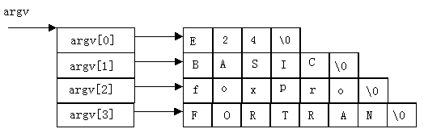

main()
{static int a[5]={1,3,5,7,9};
int *num[5]={&a[0],&a[1],&a[2],&a[3],&a[4]};
int **p,i;
p=num;
for(i=0;i<5;i++)
{printf("%d\t",**p);p++;}
}
指针数组的元素只能存放地址。
前面介绍的main函数都是不带参数的。因此main 后的括号都是空括号。实际上，main函数可以带参数，这个参数可以认为是 main函数的形式参数。Ｃ语言规定main函数的参数只能有两个，习惯上这两个参数写为argc和argv。因此，main函数的函数头可写为：
main (argc,argv)
Ｃ语言还规定argc(第一个形参)必须是整型变量,argv( 第二个形参)必须是指向字符串的指针数组。加上形参说明后，main函数的函数头应写为：
main (int argc,char *argv[])
由于main函数不能被其它函数调用，因此不可能在程序内部取得实际值。那么，在何处把实参值赋予main函数的形参呢 实际上,main函数的参数值是从操作系统命令行上获得的。当我们要运行一个可执行文件时，在DOS提示符下键入文件名，再输入实际参数即可把这些实参传送到main的形参中去。
DOS提示符下命令行的一般形式为：
C:\>可执行文件名 参数 参数……;
但是应该特别注意的是，main 的两个形参和命令行中的参数在位置上不是一一对应的。因为,main的形参只有二个，而命令行中的参数个数原则上未加限制。argc参数表示了命令行中参数的个数(注意：文件名本身也算一个参数)，argc的值是在输入命令行时由系统按实际参数的个数自动赋予的。
例如有命令行为：
C:\>E24 BASIC foxpro FORTRAN
由于文件名E24本身也算一个参数，所以共有4个参数，因此argc取得的值为4。argv参数是字符串指针数组，其各元素值为命令行中各字符串(参数均按字符串处理)的首地址。 指针数组的长度即为参数个数。数组元素初值由系统自动赋予。其表示如图所示：

main(int argc,char *argv){
while(argc-->1)
printf("%s\n",*++argv);
}
本例是显示命令行中输入的参数。如果上例的可执行文件名为e24.exe，存放在A驱动器的盘内。因此输入的命令行为：
C:\>a:e24 BASIC foxpro FORTRAN
则运行结果为：
BASIC foxpro FORTRAN
该行共有4个参数，执行main时，argc的初值即为4。argv的4个元素分为4个字符串的首地址。执行while语句，每循环一次argv值减1，当argv等于1时停止循环，共循环三次，因此共可输出三个参数。在printf函数中，由于打印项*++argv是先加1再打印， 故第一次打印的是argv[1]所指的字符串BASIC。第二、三次循环分别打印后二个字符串。而参数e24是文件名，不必输出。